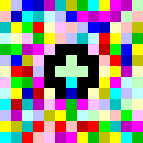

Canvas VM
CANVAS VM
Upload a painting. Run a program.
A serious virtual machine and JIT compiler forN Piet programming language.
Because code deserves to be art and art deserves to run flawlessly.
bolt
Ultra Fast
- Bytecode compilation
- WebAssembly JIT
- Optimized traversal
- Native binaries
engineering
Serious VM
- Bytecode IR layer
- Step debugger
- Breakpoints
- Watchdog system
- I/O buffering
1
Load your program

HelloWorld3.png (25x7px)
Upload any Piet image. The VM automatically detects codel size and validates the color palette.
2
Compile to bytecode
Universal bytecode (21 ops)
0: Push(72)
1: OutChar
2: Push(101)
3: OutChar
...
1: OutChar
2: Push(101)
3: OutChar
...
Piet artwork is compiled to portable bytecode instructions. Fast, deterministic, and platform-independent.
3
Run at native speed
JIT → x86_64 machine code
48 89 e5 48 83 ec 10
89 7d fc 8b 45 fc 89
c7 e8 2a 00 00 00 48
...
89 7d fc 8b 45 fc 89
c7 e8 2a 00 00 00 48
...
Output: Hello World!
Completed in 20 steps
Time: 104µs | Speed: 19 ops/s
JIT-ready to run in your browser instantly. Can also be compiled to native x86/ARM binaries for desktop execution.
How to Use
language
WebAssembly
Import and use in your JavaScript/TypeScript projects
INSTALLATION
$ npm install canvas-vm-wasm
// main.js
import init, { Canvas } from 'canvas-vm-wasm';
// Initialize WASM
await init();
// Create and run
const canvas = new Canvas(imageData, w, h, codel);
canvas.compile();
canvas.run();
console.log(canvas.output());
// Initialize WASM
await init();
// Create and run
const canvas = new Canvas(imageData, w, h, codel);
canvas.compile();
canvas.run();
console.log(canvas.output());
/>
terminal
Command Line
Run programs or compile to bytecode
INSTALLATION
$ curl -sSL www.canvasvm.com/install.sh | bash
# Run a Piet program
$ piet run HelloWorld.png
Hello World!
Hello World!
# Compile to bytecode
$ pietc compile HelloWorld.png -o hello.cvm
[OK] Compiled 21 instructions
[OK] Compiled 21 instructions
# Execute bytecode
$ piet exec hello.cvm
Hello World!
Hello World!
Try Piet in your browser
Zero installation. Runs natively on WebAssembly.
v1.0.0
Online
terminal Bytecode
RO| # | Op | Val |
|---|---|---|
| No program loaded. Upload a Piet image to compile. | ||
grid_view
timer
Stack:
DP: RIGHT CC: LEFT
[ empty ]
upload_file
Ready
Steps:
0
Time:
0.00ms
Speed:
-
IP:
0x00
Pos:
(0,0)
IDLE
Canvas VM initialized. Ready for input.
> _